Recientes
Canal de YouTubeVideos
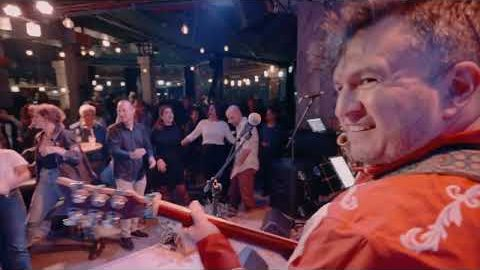
Madhavski HoroBombaras, en vivo en FeelBeit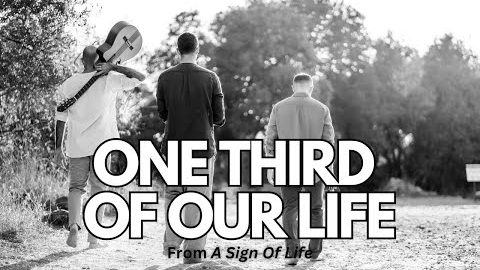
One Third of Our LifePlayground Trio, sesión en vivo en estudio Saudi GrooveItai Armon Ensemble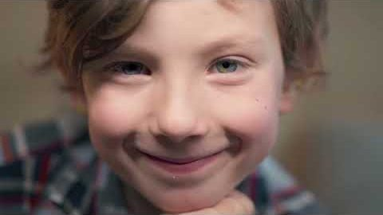
De AmorSongs for Empathy, videoclip oficial Tihye ItiDavid Lavi & Tamar Philosof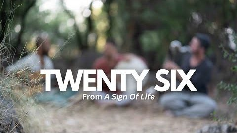
Twenty SixPlayground Trio, sesión en vivo en estudio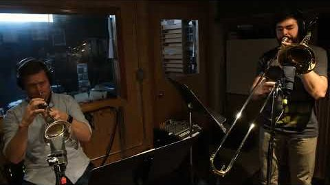
Casi LibreSongs for Empathy, desde el estudio Avance de BombarasBombaras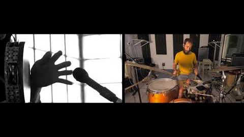
ShaloshZohar Fresco, arreglo para batería de NadavFotos de Francesco Gargiulli, Yuval Gur, Taylor Rossi y Susana Jiménez
Galería

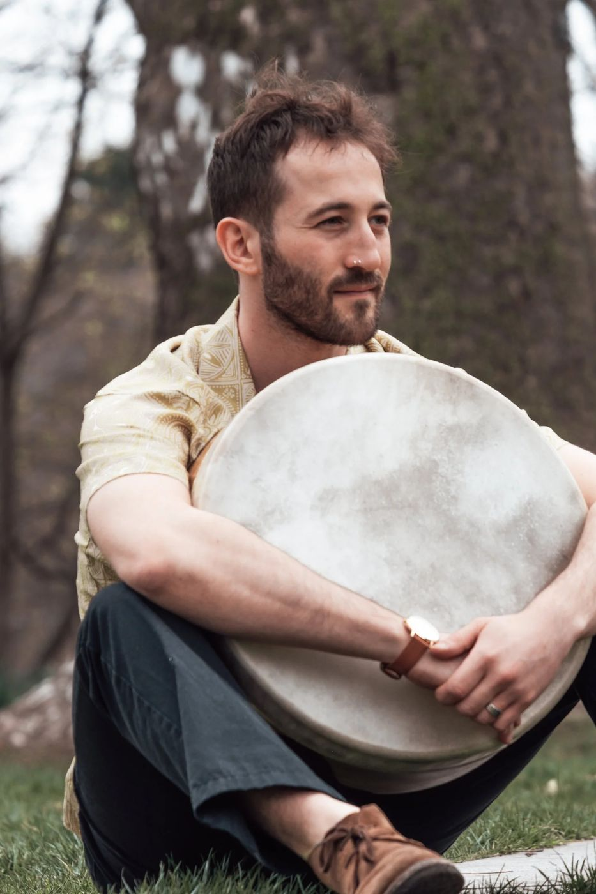
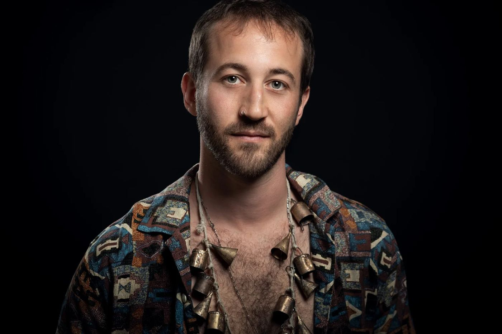
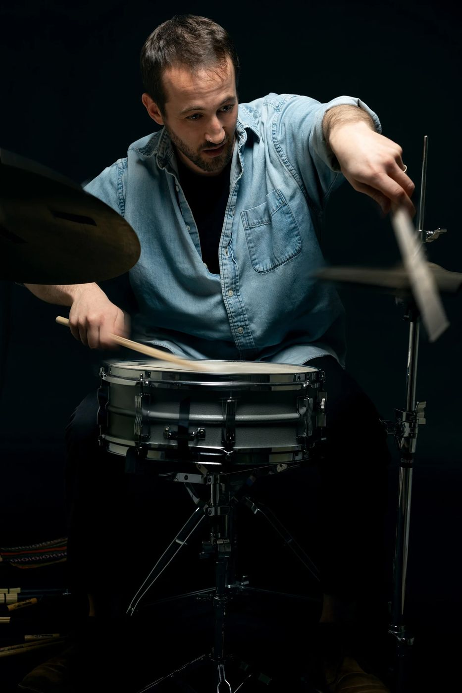
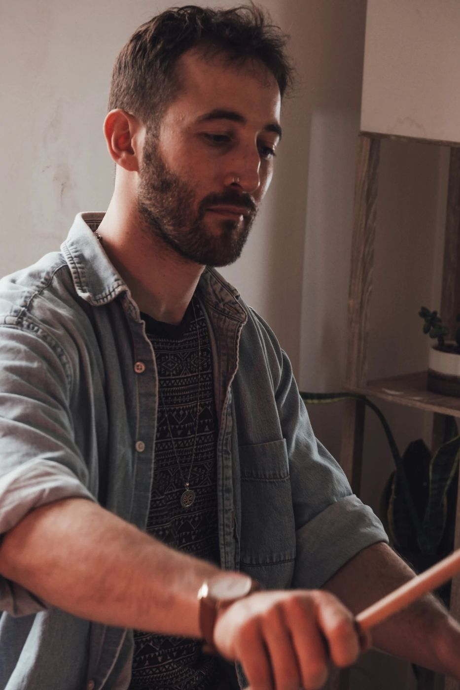
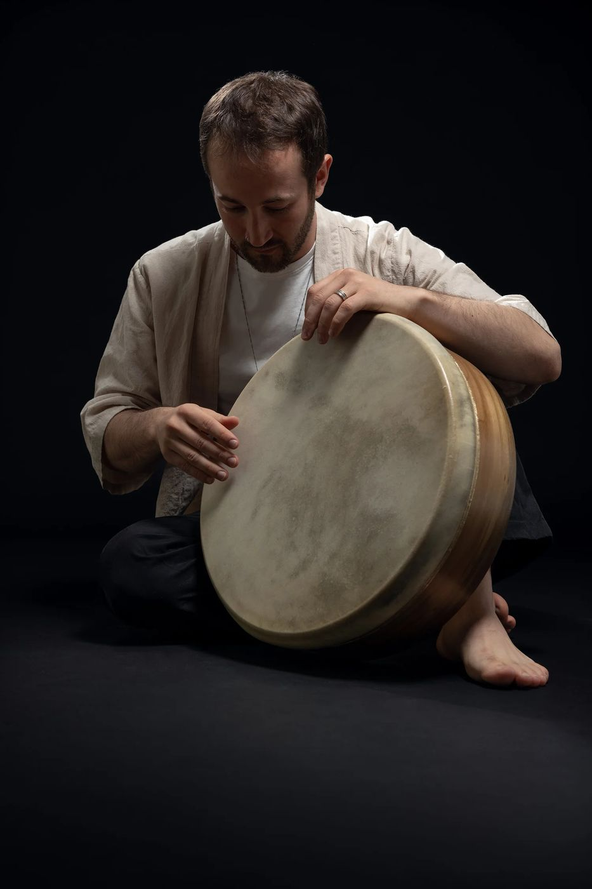
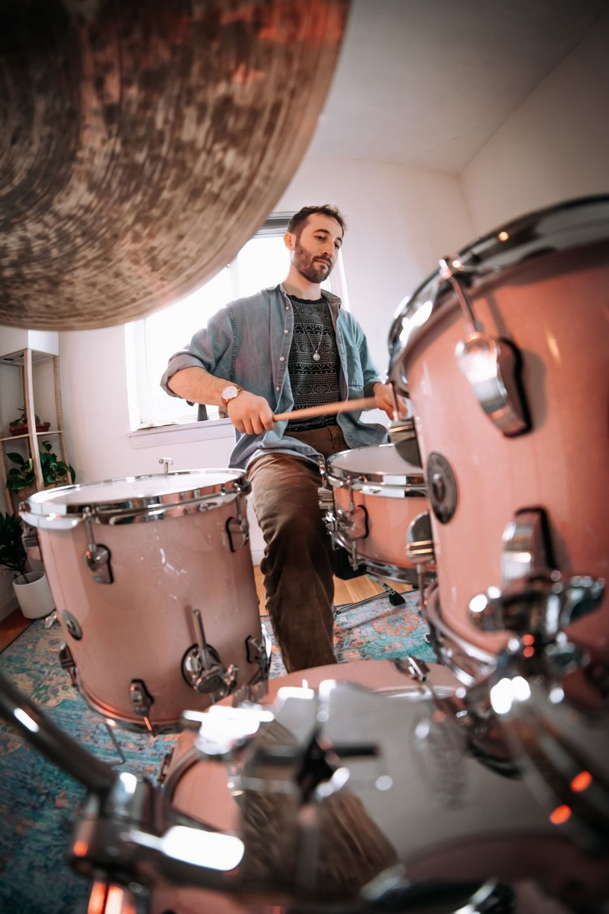
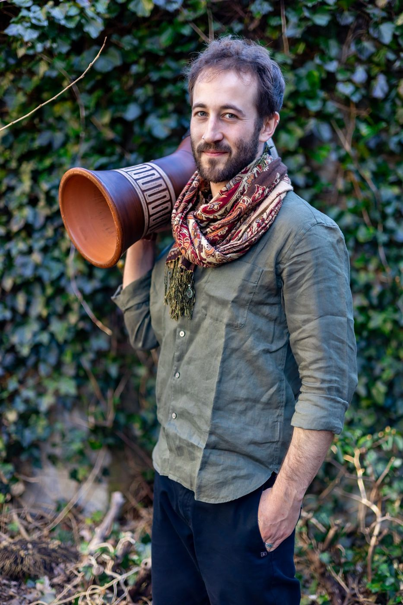
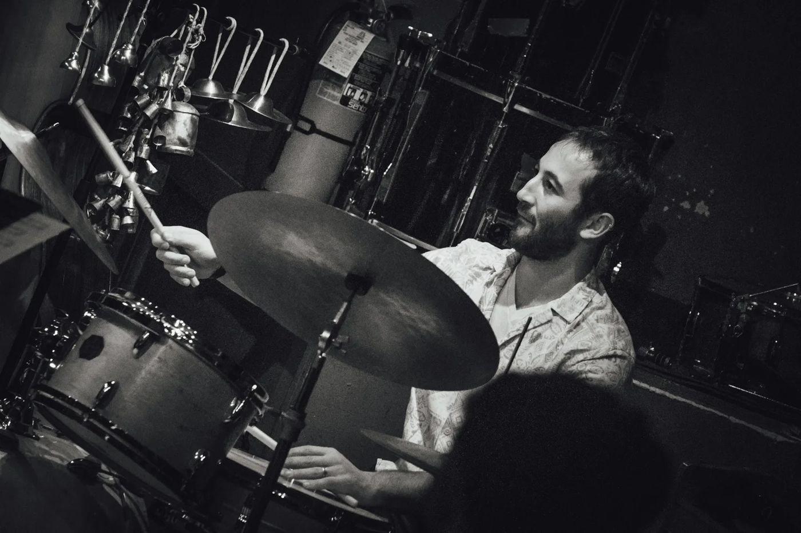
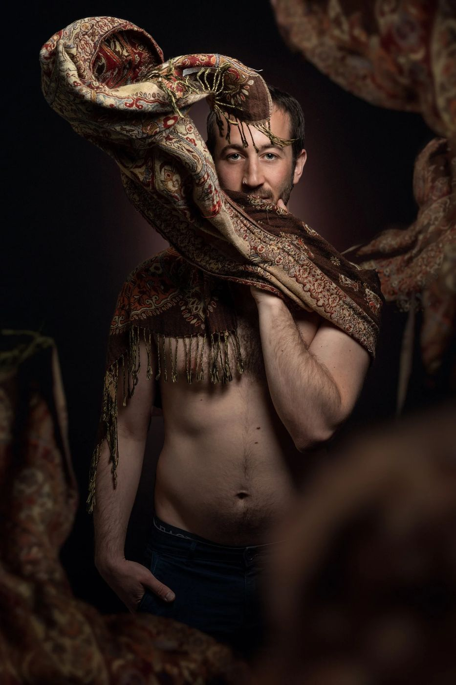
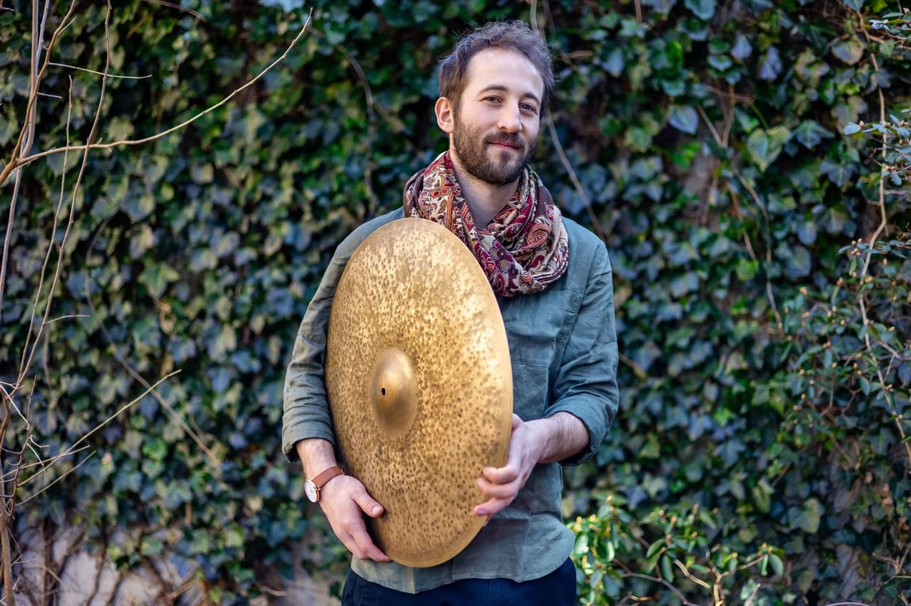
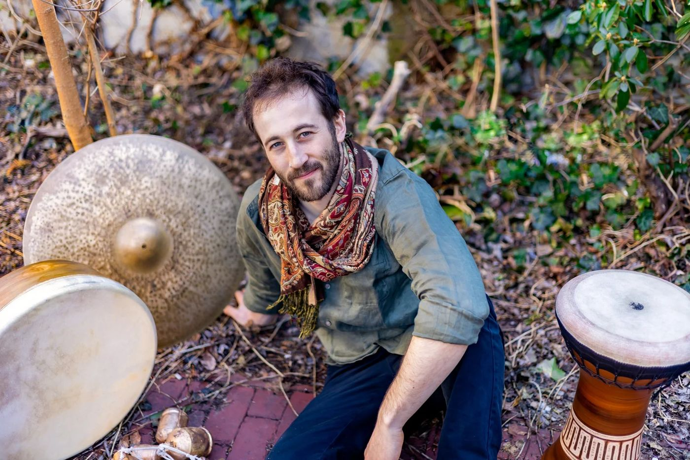
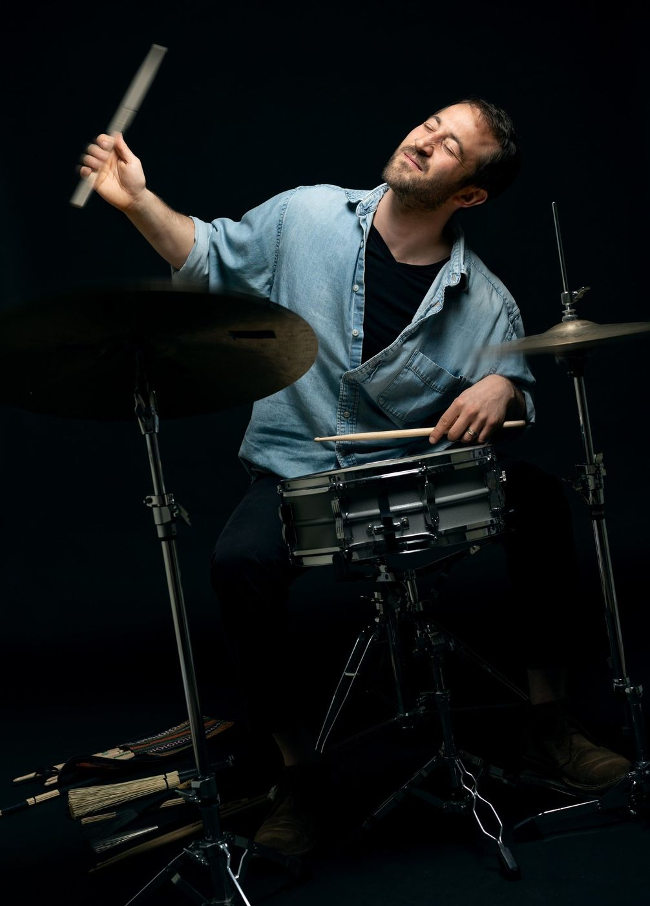
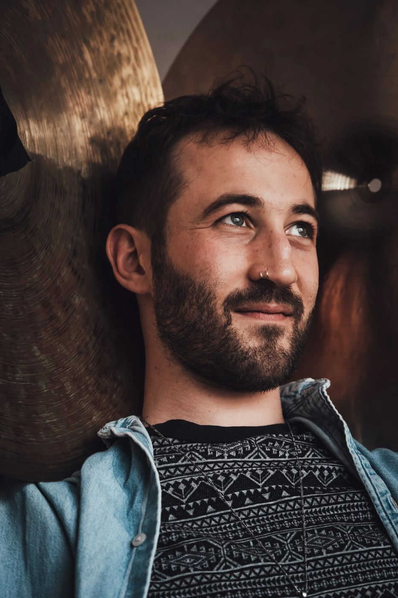
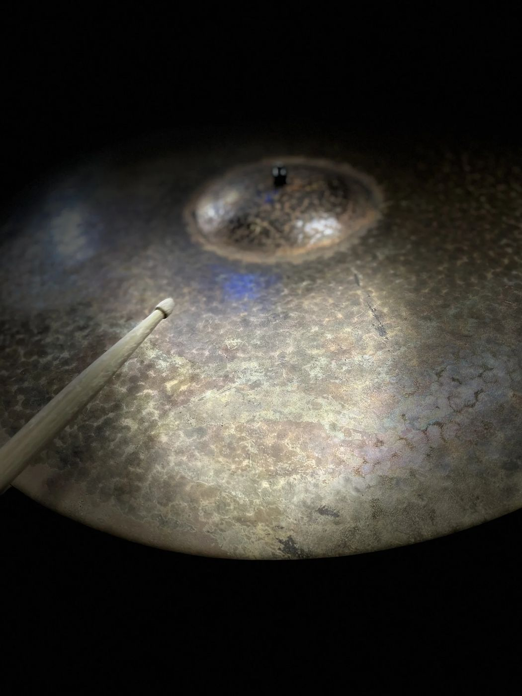